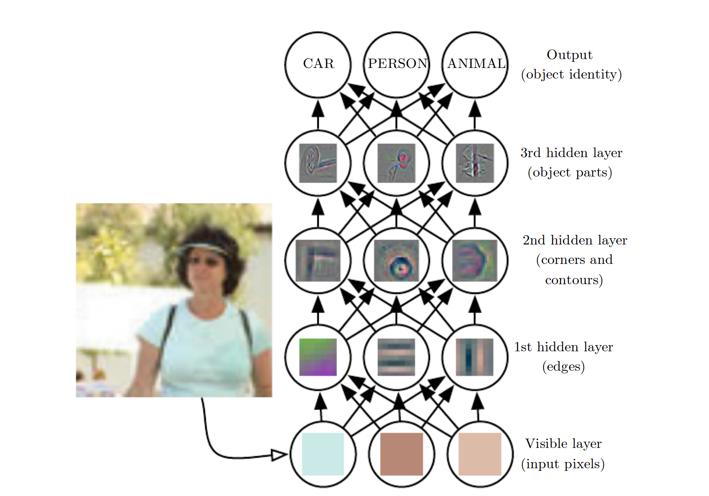

Neural networks have been all the rage for the last few years, and their popularity has initiated a machine learning renaissance of sorts. That said, their history dates back to the late 1950s, and they've been known by many names over the years, including Multi-Layer Perceptrons (MLPs), Cybernetics, and Connectionist Networks. Neural networks in their current form have regained popularity starting around 2012, and their prevalence and use has exploded exponentially since then, but the fundamental principles are the same as they always have been. Unlike linear regression, neural networks can learn complex non-linear functions. It is this property that makes neural networks so popular.
The perceptron is the atomic unit of a neural network. It represents one "neuron", whose output is calculated as a simple function of its inputs, weights, and a bias, which is then passed through an activation function. The output O, is calculated as O = A(WX + b), where X is a vector containing features for each input sample, W is a vector containing the corresponding weight parameters to scale each input feature by, b is a scaler bias parameter, and A is the non-linear activation function. You can view an interactive multi-layer example of this process here.
You should notice that WX + b is the exact expression used to calculate linear regression. It is the activation function alone that causes neural networks to be be non-linear. Non-linear activation functions are very simple functions that "bend" their linear input. There are only a handful of activations functions that are generally used in practice, including sigmoid, tanh, and the recently popular, relu. Below is an example of one of the most famous activation functions, the sigmoid.
The true power of neural networks comes from the ability to chain hundreds, thousands, and even millions of these small perceptron units together to create a complex function. Each unit learns to play a specific (though hard to explicitly identify) role in the network that eventually produces the output.

Units are organized into layers, with the output value of each unit in one layer acting as an input value to another neuron in one or more of the next layers. The first layer takes the inputs from a sample in the training data itself, while each layer that follows takes the output of the neurons at a previous layer as its inputs. When each unit in a layer is connected to every unit in the next layer, we call the layer "fully connected", and this is perhaps the most common layer topology. Layers that do not take the training data as input, that is, every layer after the first, are called "hidden layers", as the role of each unit is hidden from us, derived as a combination of inputs processed from earlier layers. Finally, we have an output layer with as many neurons as we have output values. For a simple scalar regression problem that's just one neuron. We take the output from that neuron to be the prediction of our model. But for a mult-class classification problem we may have tens or hundreds of neurons, each representing a confidence score that the input belongs to that class.

With each layer comes an added level of semantic abstraction. Later layers learn functions that are more complex and "higher-level" than the layers below them. As an example, take a four layer neural network that takes a monochromatic 256x256 image as input and classifies it as belonging to one of three categories: animal, person, or car. In this network, each pixel is treated as an input, so the first layer has 256x256=65,536 units (note, an RGB image would have 3x256x256=196,608 inputs). The second layer receives the outputs of the first layer as input, so it has the potential to learn from the features that are derived from the original features once they have been processed through a layer of perceptrons. This layer may learn neurons that fire for simple patterns like edges or lines. The third layer takes the second layer output as its input, so it's able to learn from the edges and lines learned by the second layer. It may be able to learn higher-level features like corners and contours. The fourth layer receives corners, lines, etc. as input, so its units may learn to represent object parts like tires, ears, or fur.
When we say that a unit is able to "learn" a concept, we mean that it outputs a high value when it receives an input that resembles the data that it has learned to preference. Neurons "learn" to recognize tires once they output high values when they are shown tires or things that look like tires, and low values for anything else. We as programmers do not explicitly tell a neuron what to learn, it learns to respond to patterns that are beneficial to the performance of the overall network itself during training.
The more neurons in a network, the more model parameters must be learned, giving the model a larger capacity to represent more complex functions. Be careful though, because increased model capacity leads to overfitting, where the network simply memorizes the training data instead of learning to extract patterns from it. This leads to poor generalization, causing the network to perform poorly on the unseen test data and when deployed in the real-world.
In general, wide but shallow networks, that is networks that have many neurons per layer but only one or two layers, are easiest to train. Deep networks, with many layers (sometimes 20+) are very difficult to train, but generalize better if you can figure out how to train them. As a rule of thumb, the more model parameters you have, the more data and regularization techniques you will be needed to keep from overfitting.
The term Deep Learning comes from the notion of stacking many layers on top of one another to form a deep model architecture. You can actually think of each layer as its own self-contained neural network, each using increasingly abstract features as inputs as you move deeper into the model.
Here we will use Keras to predict housing prices from the 1978 Boston housing dataset just like in the linear regression example.
# "pip install keras scikit-learn" if you have not already done so
from keras.models import Sequential
from keras.layers import Dense, Activation
from keras.datasets import boston_housing
from sklearn.metrics import mean_absolute_error
# load boston housing data. Uses 80%/20% train/test split by default.
(x_train, y_train), (x_test, y_test) = boston_housing.load_data()
# create our neural network. Will have two hidden layers of 64 units each
# and an output layer with one neuron because we are predicting a single
# scalar value. Use relu activation functions.
model = Sequential()
# add a fully-connected layer with 64 units
model.add(Dense(64, input_shape=(13,)))
# apply a relu activation function to "bend" the linear output of
# the fully connected layer
model.add(Activation('relu'))
# repeat...
model.add(Dense(64, input_shape=(13,)))
model.add(Activation('relu'))
model.add(Dense(1))
# use RMSProp for optimization and Mean Squared Error (MSE) as loss function.
model.compile(optimizer='rmsprop', loss='mse')
model.summary()
print('[*] training model...')
model.fit(x_train, y_train, epochs=150, verbose=2)
print('[*] predicting from test set...')
y_hat = model.predict(x_test)
for i in range(len(y_hat)):
print ('[+] predicted: {:.1f} real: {} error: {:.1f}'\
.format(y_hat[i][0], y_test[i], abs(y_hat[i][0] - y_test[i])))
print('[+] the mean absolute error is {:.1f}'.format(mean_absolute_error(y_hat, y_test)))
This script takes a bit longer to run than the linear regression example as the training process is much more computationally intensive. Instead of training 13 parameters like with the linear regression example (13 weights, 1 bias), we are training 5,121 parameters.
Layer (type) Output Shape Param #
=================================================================
dense_1 (Dense) (None, 64) 896
_________________________________________________________________
activation_1 (Activation) (None, 64) 0
_________________________________________________________________
dense_2 (Dense) (None, 64) 4160
_________________________________________________________________
activation_2 (Activation) (None, 64) 0
_________________________________________________________________
dense_3 (Dense) (None, 1) 65
=================================================================
Total params: 5,121
Trainable params: 5,121
Non-trainable params: 0
_________________________________________________________________
The script will begin training on your GPU if you have with Nvidia CUDA installed on your machine, or default to your CPU if not. You will see the current training loss output after each epoch (full pass of all training data) like so:
Epoch 2/150
0s - loss: 459.0608
Epoch 2/150
0s - loss: 142.8037
Epoch 3/150
0s - loss: 136.5081
Epoch 4/150
0s - loss: 159.8621
Epoch 5/150
0s - loss: 177.0426
Epoch 6/150
0s - loss: 97.4700
Epoch 7/150
0s - loss: 106.0199
Epoch 8/150
0s - loss: 136.4868
Epoch 9/150
0s - loss: 139.0648
Epoch 10/150
0s - loss: 136.8655
You will notice that the loss tends to decrease with each epoch, especially at the beginning. Once training is done, the script will use our trained models to predict the housing prices using our test data.
[*] predicting from test set...
[+] predicted: 3.6 real: 7.2 error: 3.6
[+] predicted: 18.6 real: 18.8 error: 0.2
[+] predicted: 22.0 real: 19.0 error: 3.0
[+] predicted: 30.2 real: 27.0 error: 3.2
[+] predicted: 24.2 real: 22.2 error: 2.0
[+] predicted: 20.9 real: 24.5 error: 3.6
[+] predicted: 26.9 real: 31.2 error: 4.3
[+] predicted: 23.4 real: 22.9 error: 0.5
[+] predicted: 18.9 real: 20.5 error: 1.6
[+] predicted: 17.0 real: 23.2 error: 6.2
...
[+] predicted: 18.9 real: 25.0 error: 6.1
[+] the mean absolute error is 3.7
Well look at that! Our neural network model performed better than our linear regressors, with a mean error of only $3,700 instead of $4,700. Note that your result may be different, as the initialization of model parameters is random, and so therefor the "path" taken during the optimization path is non-deterministic.
Keep in mind that neural networks don't always outperform other ML algorithms and it is usually a good idea to try a range of different algorithms and choose the one that works the best. It is also common practice to begin a problem using a common baseline model, like we did here with linear regression, before trying more complex methods. That way you have something to compare your other models to. And hey, if you're baseline performs well enough on its own, you're done!
This concludes the overview section of this document. Head over to the tutorials to get started learning more about ML implementation now that you've got a rough idea of the landscape, or peruse the list of Branger_Briz machine learning projects to see what the the team has been up to.